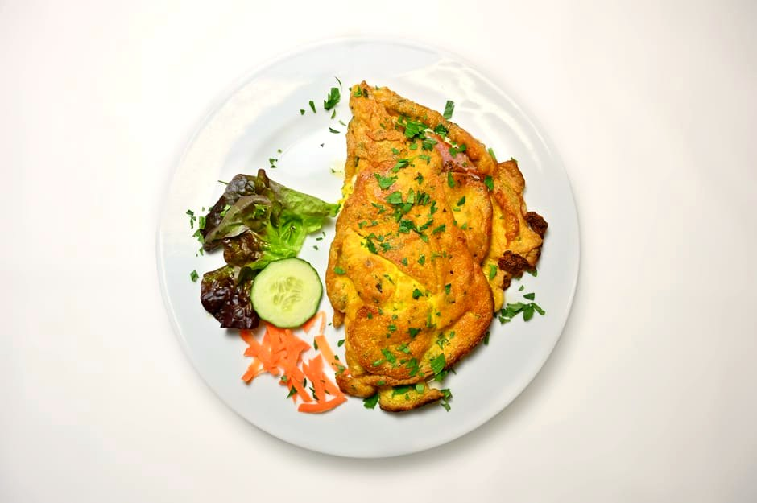

Smoked Salmon & Cream Cheese Omelette

Smoked Salmon & Cream Cheese Omelette delivers 70 g of protein for just 4 g net carbs — ready in about 13 minutes. It keeps net carbs low and added sugar near zero, so your energy stays steady.
Ingredients
- 4 Large eggs
- 150 g Liquid egg whites
- 120 g Smoked salmon
- 40 g Light cream cheese
- Chives & black pepper, to taste
Equipment
- non-stick skillet
Method
- Whisk the eggs and egg whites; pour into a hot non-stick pan.
- As it sets, dot with cream cheese and lay the smoked salmon over half.
- Fold and slide onto a plate; finish with chives and pepper.
Storage & make-ahead
Fridge: keeps 3–4 days in an airtight container — reheat gently. Most portions freeze well for up to 2 months; thaw overnight.
Tip
An elegant, low-carb breakfast that eats like brunch. Great with a squeeze of lemon.
Dietary swaps
Dairy-free: Light cream cheese → dairy-free cream cheese (for lactose intolerance or a dairy-free diet)
Full nutrition (estimated, per serving): 566 kcal · 70 g protein · 4 g net carbs · 30 g fat (11.5 g sat) · 1 g fiber · 2.5 g sugar · 1490 mg sodium. Allergens: Milk, Egg, Fish. Macros are realistic estimates from standard food-composition values; brands and portions vary.
Get the full cookbook (PDF) — 100 recipes, 3 meal plans & the science →